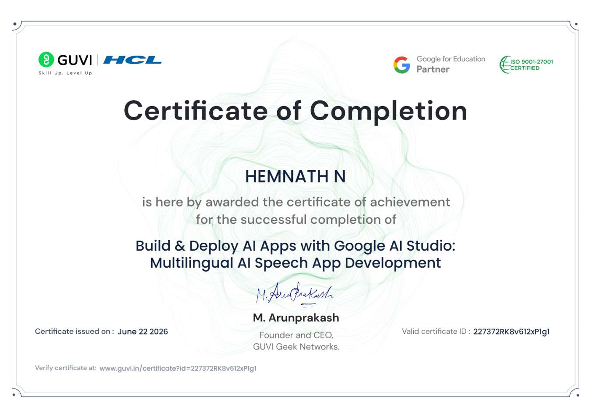
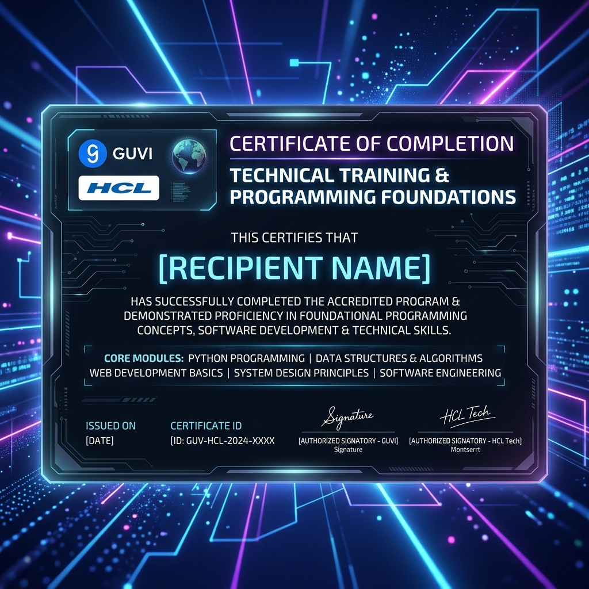
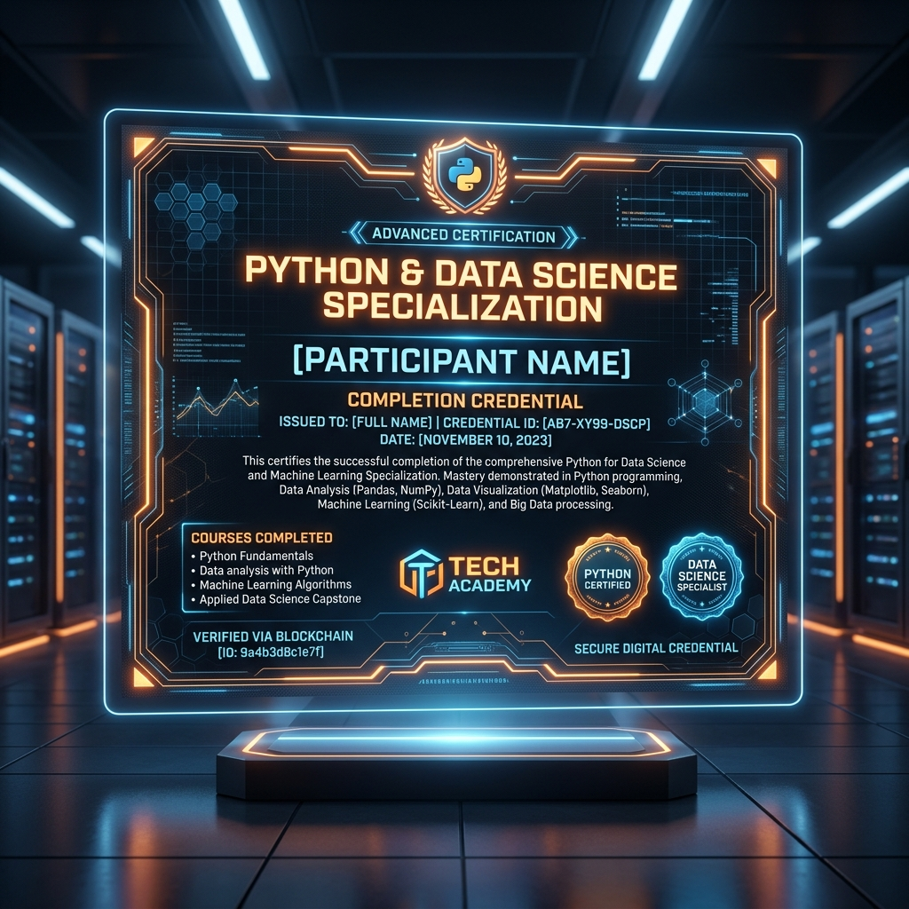
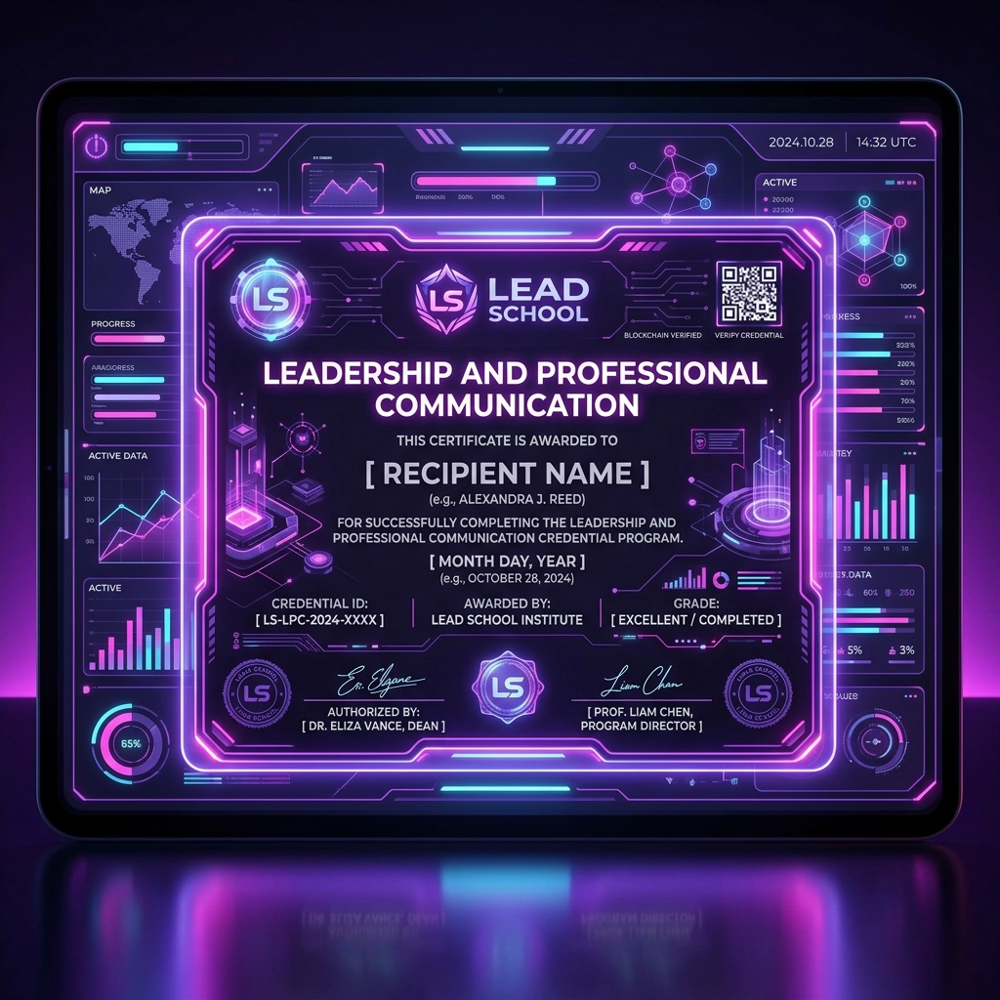
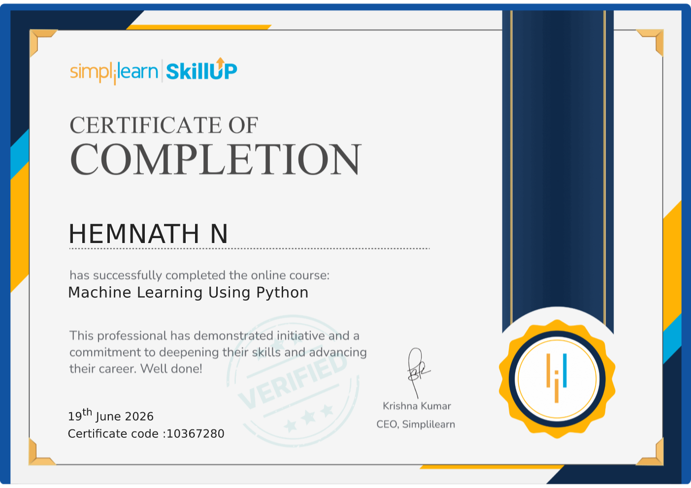

Hi, I'm Hemnath
B.Tech AI & Data Science Student
JNN Institute of Engineering • 2nd Year
Passionate about building intelligent models, parsing complex data, and crafting creative digital experiences. Actively seeking opportunities to learn and innovate in AI/ML engineering.

Technical Skills
My Certifications

Artificial Intelligence Foundations
Issued by: HCL & GUVI

Data Science & Analytics Core
Issued by: HCL & GUVI

Python Programming Specialization
Issued by: Coursera

Lead School Achievement
Issued by: Lead School

Academic & Technical Achievement
Issued by: JNN Institute
Other Activities
Creative Animation & Design
Interested in editing, rendering interactive elements, and mixing technical logic with visual design storytelling.
Tech Community & Hackathons
Enthusiastic participant in college technical symposiums, coding sprints, and collaborative peer learning circles.
AI Research & Open Source
Fascinated by neural networks, model optimization, and committing clean documentation / bug-fixes to open source code bases.
Technical Skills
SKILLS_MATRIX :: 6 Core Modules Active
My Certifications
CERT_DATABASE :: 5 Verified Credentials
Artificial Intelligence Foundations
Issued by: HCL & GUVI
A specialized national initiative certification validating foundations in Artificial Intelligence, machine learning workflows, and cloud cognitive services.
- Programmed AI pipelines in Python
- Learned key concepts of computer vision and natural language processing
- Built simple prediction models on GUVI IDE
- Supported by HCL engineering mentors
Data Science & Analytics Core
Issued by: HCL & GUVI
Technical training course focused on core software engineering practices, programming design patterns, and structured data handling.
- Developed algorithmic problem-solving skills
- Mastered data structures implementation
- Verified software development practices
- Completed hands-on projects
Python Programming Specialization
Issued by: Coursera
Multi-course specialization detailing Python programming, data retrieval, and data visualization for real-world data science workflows.
- Parsed web data using BeautifulSoup and JSON libraries
- Wrote custom SQL scripts to manage SQLite databases
- Handled data cleaning and visualization tasks
- Completed capstone projects
Lead School Achievement
Issued by: Lead School
Certification honoring excellence in soft skills, communication proficiency, and team coordination in academic environments.
- Completed leadership workshops
- Participated in team building exercises
- Enhanced public speaking and presentation skills
- Verified professional ethics
Academic & Technical Achievement
Issued by: JNN Institute of Engineering
Awarded for maintaining high academic standards and actively contributing to institutional technical workshops and symposiums throughout the year.
- Maintained strong academic GPA of 8.2
- Participated in departmental technical symposia
- Contributed to research project forums
- Evaluated on hands-on practical labs
Activities & Interests
ACTIVITY_LOG :: 9 Protocols Active